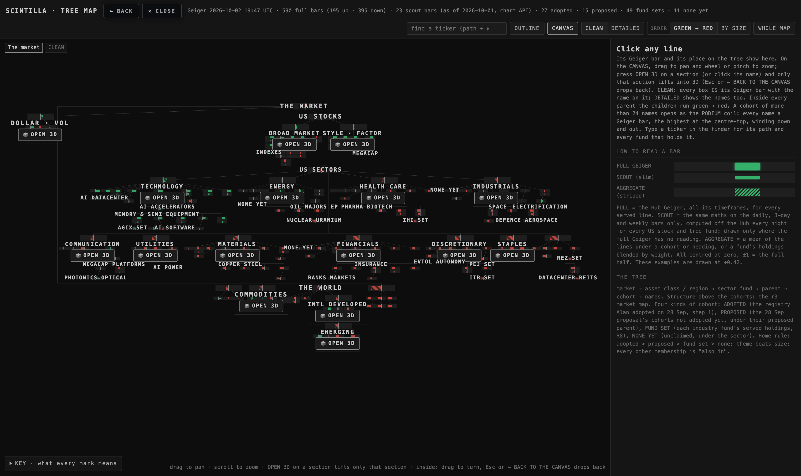
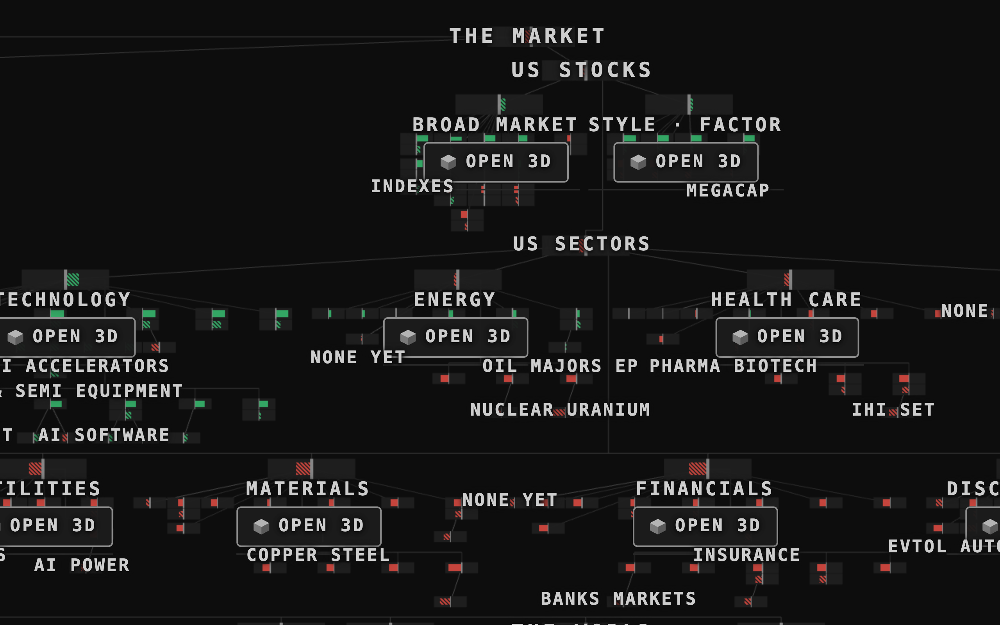
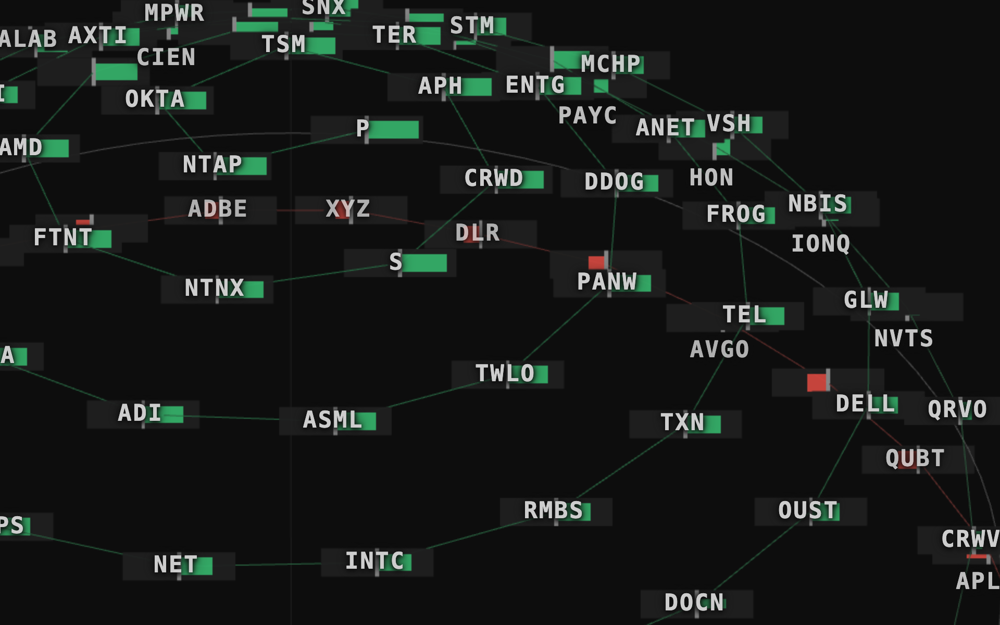
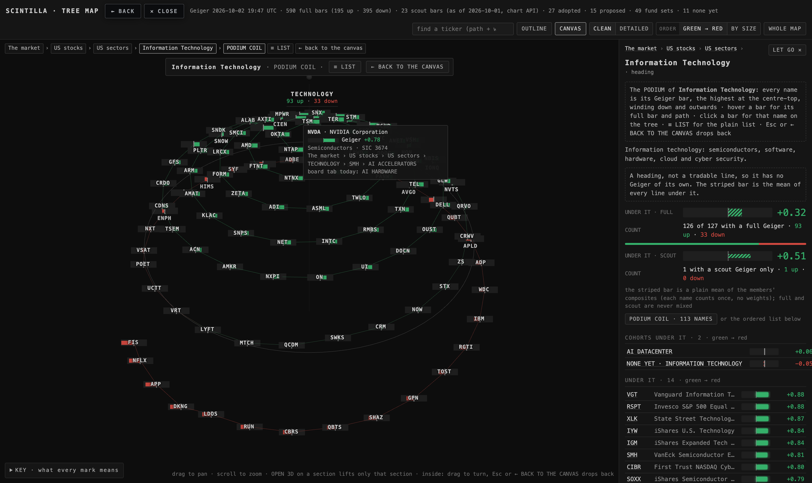
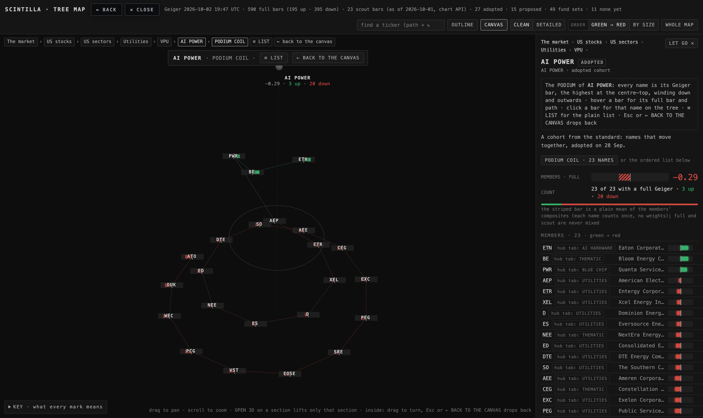
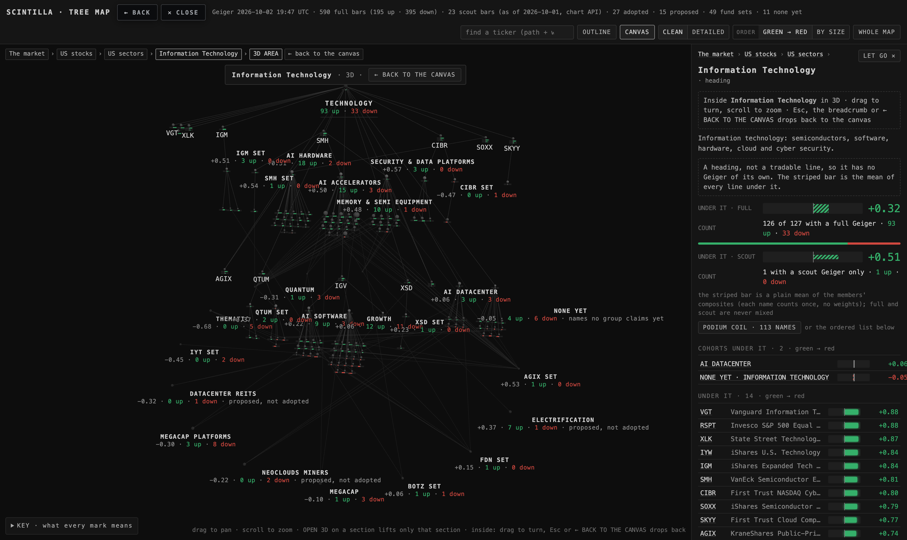
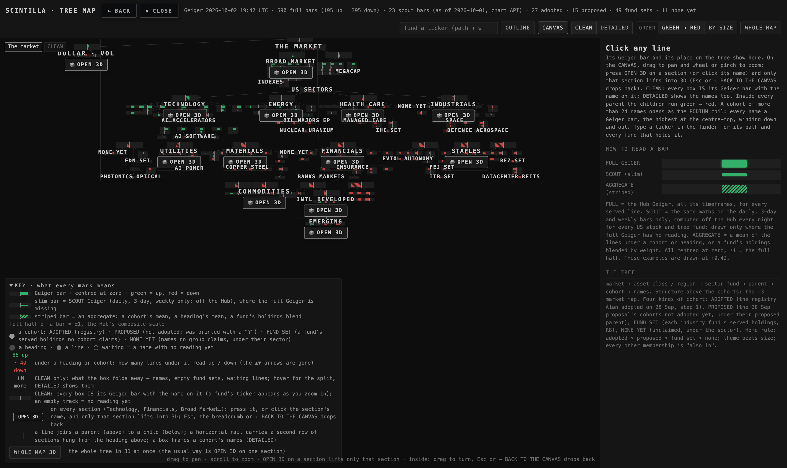
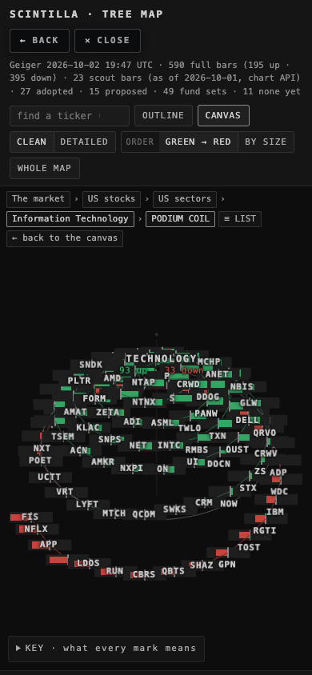

THE TREE · T6 — Geigers everywhere, the podium coil, OPEN 3D on every section
2 Oct 2026 · built on the live Hub page tree-map (branch hub/t6-tree-geigers-podium-20261002, not deployed) · every picture below is a real headless browser shot of the branch, examined by eye · numbers tagged [MEASURED] come from the recorded walk (deliverables/20260929/tree-map/shots/t6-proof.json)
1 · THE PICTURES FIRST
1.1 CLEAN, the zoom-out — before (this morning) → after



1.2 The podium coil for Technology (113 names) — before → after





1.3 A section opened in 3D, with its top bar



2 · WHAT CHANGED, IN WORDS
- Geigers in CLEAN. CLEAN used to draw every box as a ball with a speck of a bar under it, so the zoom-out had "no Geigers". Now a box is its bar, drawn with a floor in screen pixels so it reads at any zoom (a section's box at least 56 × 13 px, a fund's or cohort's at least 21 × 7 px, on a Retina screen twice that in device pixels), the name sits on it, and a box with no reading at all shows the empty track. To give the boxes room, CLEAN now lays a cohort in its parent's grid like a fund (a cohort in CLEAN folds its names away, so it is a leaf), spaces the grids wider, and lets the top level of the tree wrap into rows — that is also what turned the tall sparse column into a wide picture. CLEAN stays the default; DETAILED is unchanged (balls with bars under them, every name).
- The podium coil. The two snakes of dots are gone. Every name is its Geiger bar standing on one spiral: the place along the spiral is its rank (an even step, so the bars never bunch), the height is its reading, so the highest stands at the centre-top and the lowest ends at the outer bottom; names with no reading follow as empty tracks a step lower. The zero ring marks where green turns to red. Ticker on every bar; hover = the full bar and the path; click = that name on the tree (it leaves the podium, switches to DETAILED and flies to the name). ≡ LIST is on the top bar and on the breadcrumb. Any parent's card offers PODIUM COIL from 13 names up (it used to be 25), so an adopted cohort can be coiled by hand.
- Per-section 3D, obvious. The 3D button left the header; it lives at the end of the KEY as WHOLE MAP 3D. Every section carries an OPEN 3D button with the cube glyph, 93 × 26 px [MEASURED], on its own line under the name; clicking the name does the same. Inside, a bar at the top names the section and carries ← BACK TO THE CANVAS (and ≡ LIST in the podium); the canvas takes keyboard focus so Esc works; the side panel repeats the way back in one line.
- No disagreement flags. The DISAGREE row is gone from the cards and the "the two authorities differ" note from the hovers. The SIC code and the FMP industry stay, both labelled.
- The bottom of the canvas. The framing now keeps a band clear at the bottom: whatever reaches highest of the KEY (open or closed) and the hint line, plus the depth of a label under its node. Opening the KEY re-frames. The KEY is wider so it is shorter when open.
3 · WHERE EACH NUMBER COMES FROM
| number | value | how it was measured |
|---|---|---|
| boxes in CLEAN at 1680 | 225 (23 sections · 64 cohorts · 138 funds) | the walk counts every drawn box rectangle [MEASURED] |
| the zoom-out before → after | 0.31 → 0.18 px per unit; width used 66% → 90%; height used 90% → 54% | the walk's framing probe, 1680 wide, canvas 1280 × 918 [MEASURED] |
| podium for Technology | 113 bars · 80 up · 33 down · top P +0.92 at radius 40 · bottom FIS −0.96 at radius 441 | the walk reads every bar's rank, reading, radius and height and checks the three orders (reading falls, radius grows, height falls) along the whole spiral [MEASURED] |
| screen the podium saves | 113 names in one screen (674 px tall of 918); the plain list of 113 rows is 2,486 px — 3.7 screens | the podium's on-screen box vs 113 outline rows at 22 px [MEASURED / 22 px per row from the stylesheet] |
| OPEN 3D button | 93 × 26 px; the section lifts, the top bar reads "Information Technology · 3D · ← BACK TO THE CANVAS"; Esc drops back | a real headless mouse click on the button, then a real Esc key [MEASURED] |
| bottom band | lowest label to the widgets: +235 px (KEY closed) at 918 high; +98 px at 618 high | the walk compares the lowest printed label with the top of the KEY and the hint [MEASURED] |
| tests | before: 1690 tests · 1683 pass · 5 known failures → after: 1696 tests · the same 5 known failures · 6 new T6 tests green | node --test tests/ on the branch [MEASURED] |
4 · WHAT COULD BE WRONG
- At 1680 wide no box touches another at the zoom-out (0 of 225 [MEASURED]). A 1400 × 900 window is bound by its height, so its grids sit closer and 66 of 225 boxes touch [MEASURED]; one notch of zoom separates them. A phone at 390 wide cannot hold 225 readable boxes (152 touch); there the OUTLINE stays the better view, as before.
- The podium's middle turns, where many readings sit near the same value, crowd more than the top and the bottom: 62 of the 113 bars touch a neighbour there and 12 tickers give way (101 of 113 printed at 1680) [MEASURED]. Drag to turn and they come round; the top and the bottom — the part that answers "who leads, who trails" — are clear.
- A section's name and OPEN 3D button are printed only when they do not land on another label; sections now outrank every other label, but two sections can still collide with each other at the zoom-out: 16 of 19 buttons are printed at 1680, 13 at 1400 [MEASURED] (REAL ESTATE, BONDS and CRYPTO lose at 1680). One notch of zoom prints them all.
- With the KEY open on a short window (a 618 px canvas) the KEY is 400 px tall and still covers part of the tree (the lowest label ends 70 px below the KEY's top [MEASURED]); at 794 and 918 px the tree clears it by 78 and 96 px. If that annoys, the KEY could become a side drawer.
- The readings change through the day; the pictures show the 2 Oct ~19:40 UTC Geiger.
5 · WHAT WAS NOT DONE
- The podium for the 118 LIKED names. The tree has no LIKED node, and the Hub's LIKED / FAVORITES list is not reachable from the tree page without a new data feed (it is not in tree.json and not in a same-origin store the page can read). Not built; decision 1 below.
- The installed-app (PWA) window could not be tested here: Esc was tested in a headless browser with the canvas holding focus, which is the mechanism that makes it work in a window where nothing had focus. One try on the real Hub app settles it.
- DETAILED is unchanged by design; the OUTLINE is unchanged.
- Nothing was deployed; nothing under Indicator Lab was touched.
6 · DECISIONS FOR ALAN (at most three)
1 · The LIKED podium. Feed the LIKED (or FAVORITES — you moved to FAVORITES on 2 Oct) list to the tree as a nightly export like the industry file, and it opens as a podium like any parent. Recommendation: FAVORITES, since that is the list you now keep.
2 · A click on a podium bar. It now jumps to that name on the tree (leaving the podium), as the brief asked. The alternative is: first click picks the name (its card on the right, the ring on the bar), and the card's "show on the tree" link jumps. Recommendation: keep the jump, since the breadcrumb brings you straight back to the parent and its PODIUM COIL button.
3 · The CLEAN zoom-out on a phone. 225 boxes do not fit a 390-wide screen without touching. Recommendation: keep OUTLINE as the phone default (it is today) and let the canvas be the desktop view; no change needed now.
7 · PROOF
Headless Chrome only (SwiftShader, never a window), at 1680 and 1400 wide with device scale 2 (your Retina), a 1680 × 700 window for the bottom test, and 390 (phone). The walk is deliverables/20260929/tree-map/proof-t6.mjs; its record is shots/t6-proof.json; the pictures are shots/t6-*.png. The tests are tests/tree-geigers-podium.test.mjs (the six items) and the T5 tests brought to the T6 truth in tests/tree-clean-coil.test.mjs.